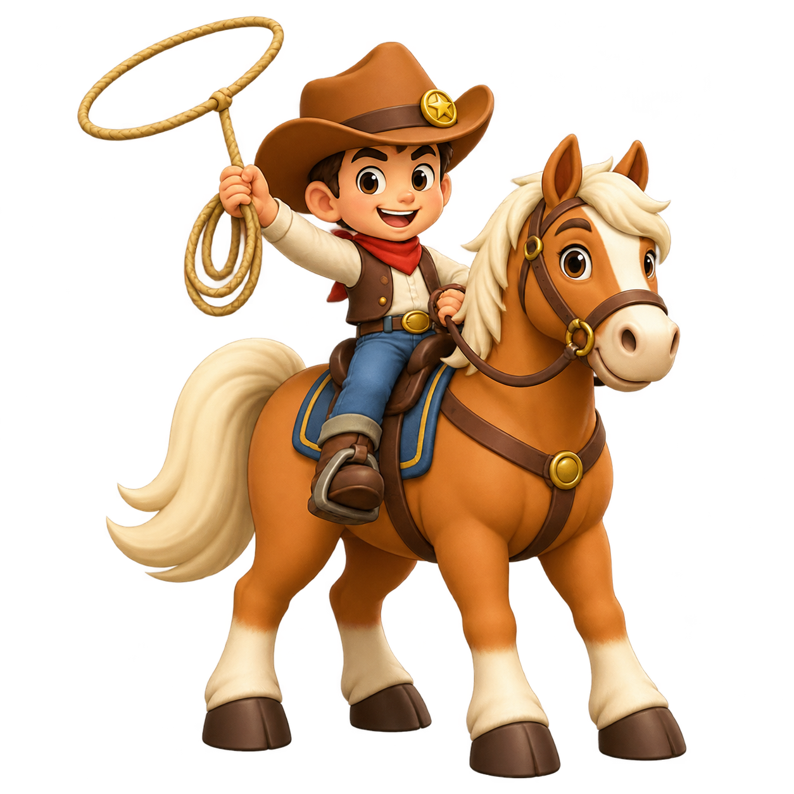

EN DESARROLLO
AVENTURA · CABALLOS · EXPLORACIÓN
Rancho
Un lazo, un caballo y un mundo por descubrir. Explora Frontera, cuida de tus caballos y construye tu propio rancho, paso a paso.
Dentro de RanchoTodavía no disponible en Google Play.
